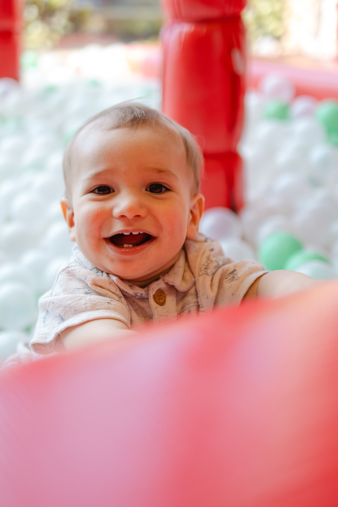
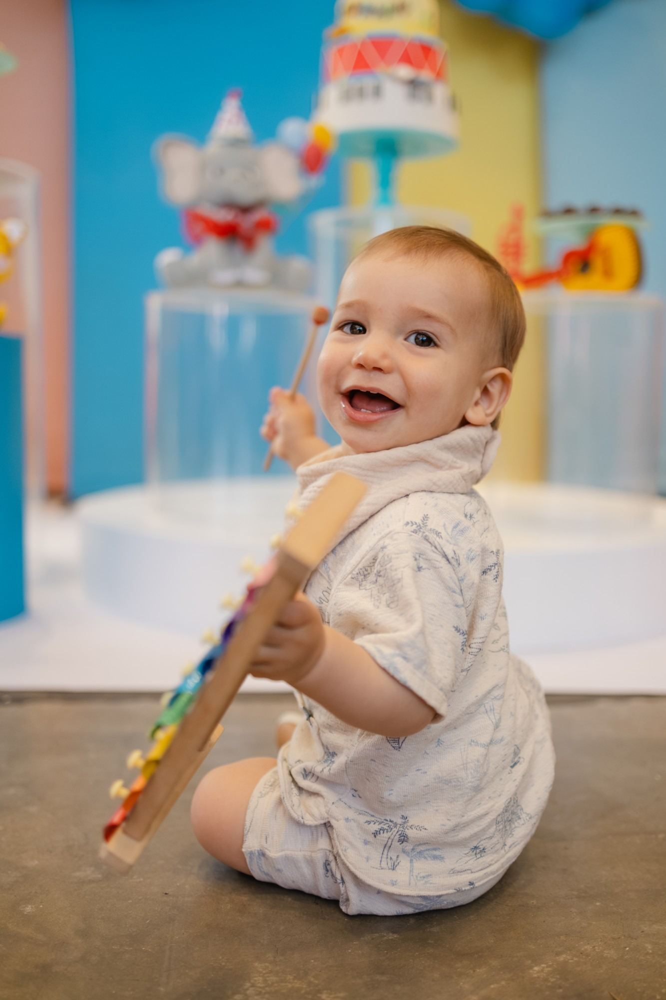
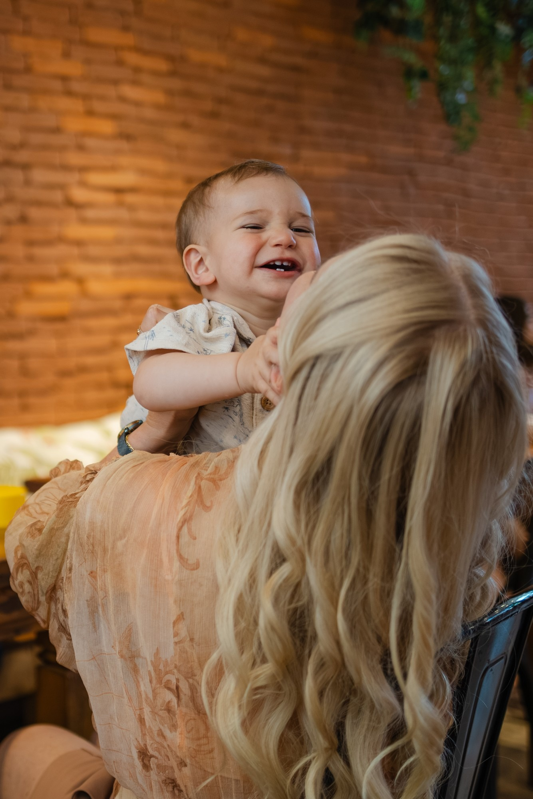
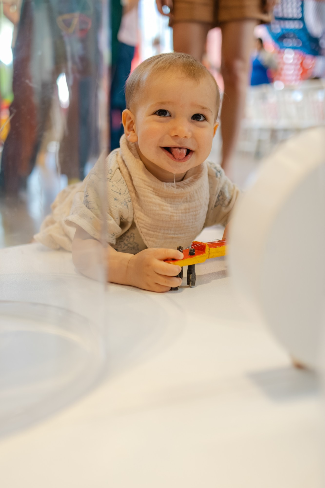
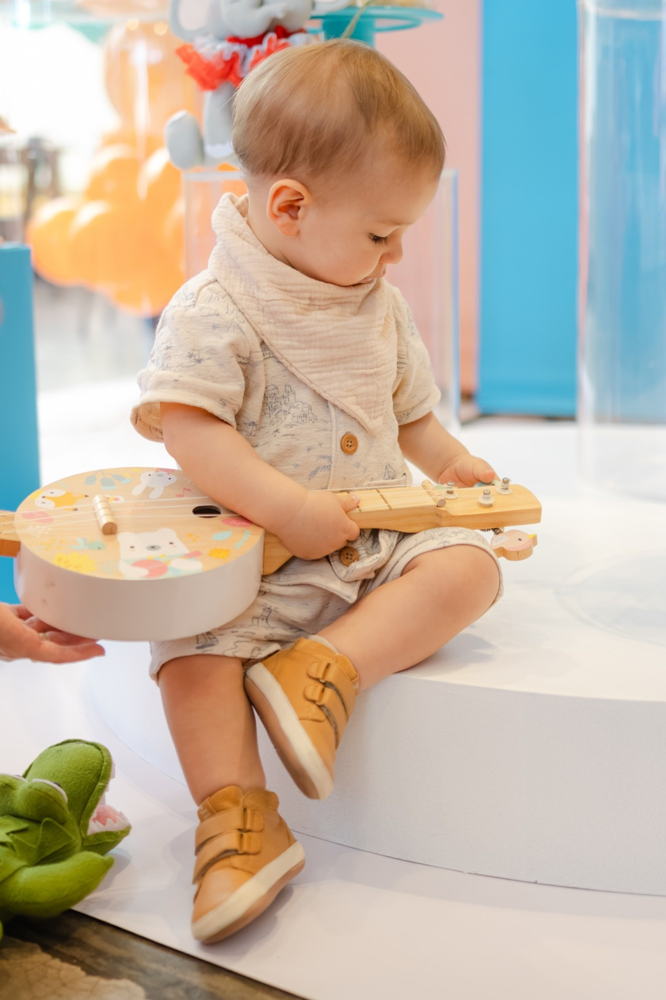

✓o sorriso fácil
Antes da festa, a mãe me mandou isso:
Característica marcante ou pedido especial
Ele é o menino mais sorridente do mundo! Eu quero lembrar disso, do sorriso fácil. Também o quanto ele ama um colinho de mamãe, ele chupando o dedinho e ele botando a linguinha pra fora




o dedinho na boca…
o dedinho na boca…
não rolou nenhuma vez 😅

André Vitor · Fotografia
@andrevitor.fotografia